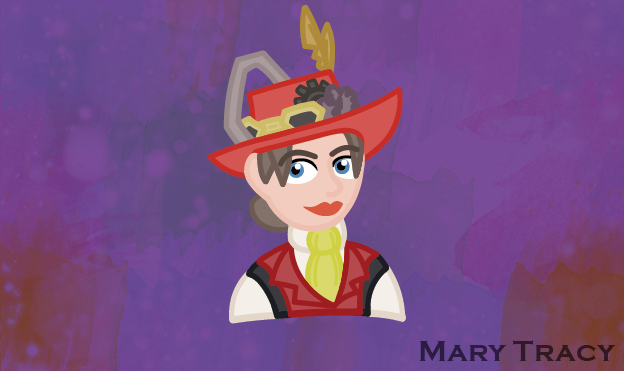
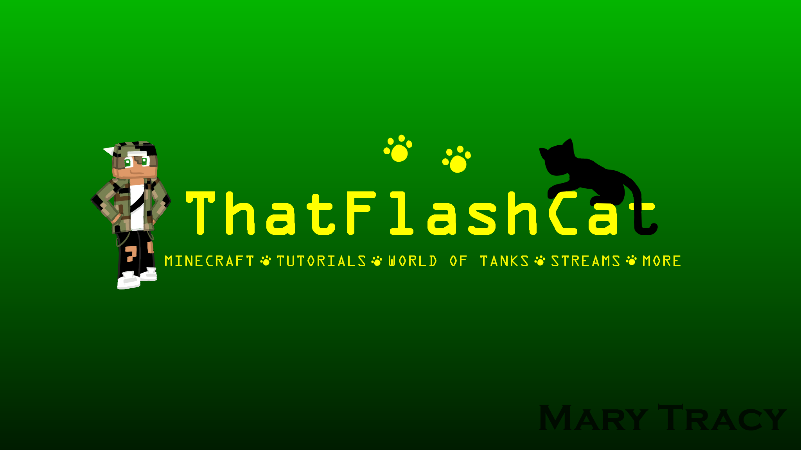
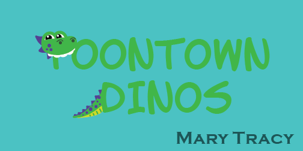
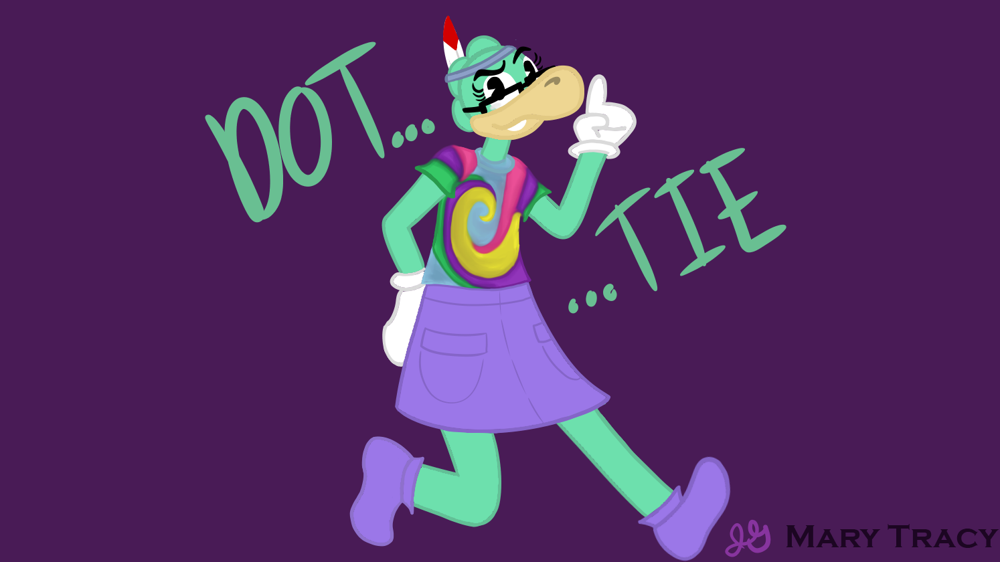
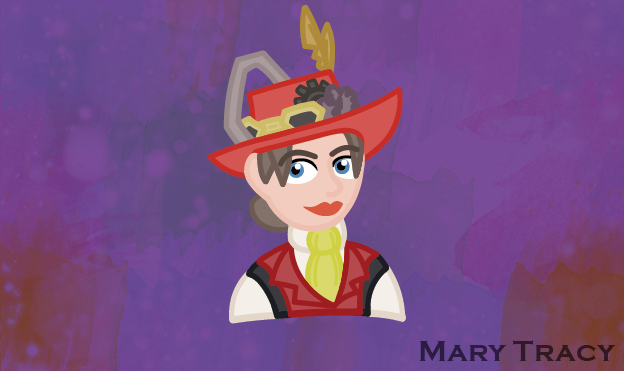
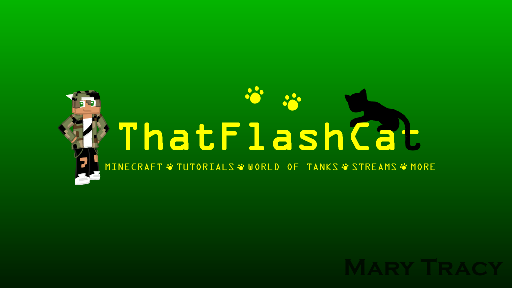
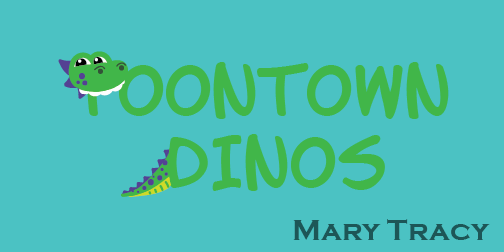
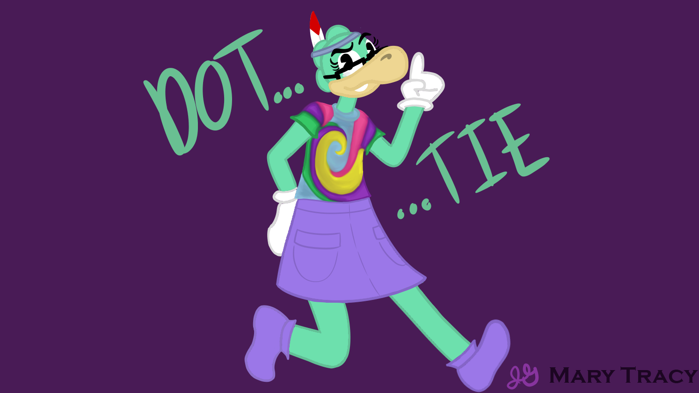

I am currently a full-time student at Seminole State College, aiming to get my Associates in Science in Digital Media.
I'm studying fundamental skills such as how to develop websites, utilize Adobe programs, and navigate social media platforms. In addition to my studies, I have taken a college course on Microsoft Office applications; and I have previous experience with animation softwares like Toon Boom and FireAlpaca. I'm active on online forums, I co-moderate a Discord server, and I run personal and hobbyist social media accounts on Facebook, Instagram, Twitter, YouTube, and more. I've made digital designs for friends, family, and myself, from banners to birthday cards.
Finally, I help as a caregiver at my home, and I enjoy musical theater, animation, drawing, crafting, knitting, and sewing.
Personal accounts:
Hobbyist accounts:
 Adobe Photoshop CC Class Photo Composition

Jane Gogglerubble Illustration

ThatFlashCat YouTube Channel Banner Design

Toontown Dinos Banner Design

Dottie Character Illustration
Adobe Photoshop CC Class Photo Composition

Jane Gogglerubble Illustration

ThatFlashCat YouTube Channel Banner Design

Toontown Dinos Banner Design

Dottie Character Illustration